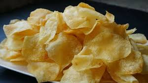

Deliciosas, Crujientes y Hechas en Casa
Disfruta de nuestras papas caseras con los mejores ingredientes. Perfectas para cualquier ocasión.

Tabla de Precios
| Presentación |
Precio |
| Bolsa pequeña |
$25 |
| Bolsa mediana |
$35 |
| Bolsa grande |
$100 |
Para pedidos grandes, llama al: 6141486802
Ventajas de las Papas Caseras:
- Ingredientes naturales y frescos.
- Sin conservadores ni químicos.
- Más sabor y mejor calidad.
- Hechas con amor y dedicación.
Desventajas:
- No hay, no existen desventajas.